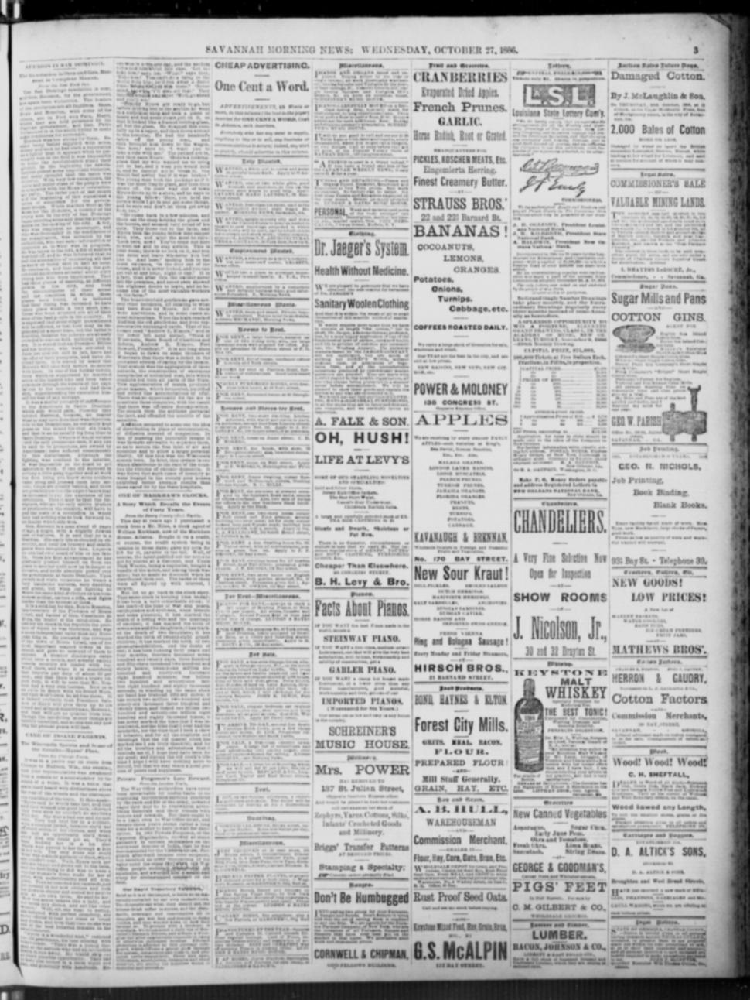

Sugar, Debt, and StrongmenAzúcar, deuda y caudillos
The eraLa era
After Annexation: The Turn to Trade (1874-1881)Después de la anexión: el giro al comercio (1874-1881)
When Báez fell in January 1874, fleeing by French warship to exile interviews in New York, the argument changed its subject. Coverage moved to the business pages: sugar estates spread across the plains, and the republic appeared as an investment frontier, interrupted by revolutions editors counted like weather. The 1879 sugar crop was estimated at ten thousand hogsheads against scarcely as many quintals two years before. Underneath ran the debt: a British inquiry exposed the Hartmont loan, nearly 3.8 million dollars, of which the government received barely 230,000.
Cuando Báez cayó en enero de 1874, huyendo en un buque de guerra francés a entrevistas de exilio en Nueva York, el argumento cambió de tema. La cobertura pasó a las páginas de negocios: los ingenios se extendieron por las llanuras, y la república apareció como una frontera de inversión, interrumpida por revoluciones que los editores contaban como el clima. La cosecha azucarera de 1879 se estimó en diez mil bocoyes, frente a apenas otros tantos quintales dos años antes. Debajo corría la deuda: una investigación británica expuso el préstamo Hartmont, de casi 3,8 millones de dólares, del cual el gobierno recibió apenas 230.000.
Sugar, Reciprocity, and Lilís (1882-1891)Azúcar, reciprocidad y Lilís (1882-1891)
Ulises Heureaux, Lilís, built his rule from 1882, absolute after 1886, on the peace investors praised. Americans on the island were reported to favor him because he had kept the peace for six years, even as interior fighting halted labor on American-owned estates. Trade supplied the policy: a reciprocity treaty in 1884 was attacked as a fraud for New York refiners and withdrawn, then won under the McKinley Tariff in 1891, cutting Dominican duties on American goods by a quarter while its sugar entered free. Samaná had not been forgotten: that year Washington revived the bid for a coaling station after Haiti refused Môle Saint-Nicolas.
Ulises Heureaux, Lilís, construyó su gobierno desde 1882, absoluto después de 1886, sobre la paz que elogiaban los inversionistas. Se informaba que los estadounidenses en la isla lo favorecían porque había mantenido la paz por seis años, aun cuando los combates del interior detenían la mano de obra en ingenios de propiedad estadounidense. El comercio suministró la política: un tratado de reciprocidad en 1884 fue atacado como un fraude para los refinadores de Nueva York y retirado, y luego ganado bajo la tarifa McKinley en 1891, reduciendo en una cuarta parte los derechos dominicanos sobre mercancías estadounidenses mientras su azúcar entraba libre. Samaná no había sido olvidada: ese año Washington revivió su intento de obtener una estación carbonera después de que Haití negara Môle Saint-Nicolas.
Creditors at the Customs House (1892-1898)Los acreedores en la aduana (1892-1898)
The customs houses had become the country's real treasury and its creditors' real target. The Dutch Westendorp concession issued millions in bonds for a railway between Puerto Plata and Santiago that remained mostly unbuilt; in 1892 its claims and customs rights passed to the American San Domingo Improvement Company, which by 1895 urged Washington to halt French naval interference with the revenues securing the loans. By 1897 an English syndicate was taking its place. That order was kept by espionage, exile and executions: at San Pedro de Macorís, Castillo and General José Estay were shot on sentences pronounced on the spot, and Heureaux was reported his own best spy, disguised as a laborer to uncover conspiracy. In 1898 the Jiménes revolt, from the steamer Fanita in the Spanish-American War year, made the republic war news.
Las aduanas se habían convertido en el verdadero tesoro del país y en el verdadero objetivo de sus acreedores. La concesión holandesa Westendorp emitió millones en bonos para un ferrocarril entre Puerto Plata y Santiago que quedó en su mayor parte sin construir; en 1892 sus reclamos y derechos aduaneros pasaron a la estadounidense San Domingo Improvement Company, que para 1895 instaba a Washington a detener la interferencia naval francesa con los ingresos que garantizaban los préstamos. Para 1897 un sindicato inglés estaba tomando su lugar. Ese orden se mantuvo con espionaje, exilio y ejecuciones: en San Pedro de Macorís, Castillo y el general José Estay fueron fusilados tras sentencias pronunciadas en el acto, y se informó que Heureaux era su mejor espía, disfrazado de obrero para descubrir una conspiración. En 1898 la revuelta de Jiménes, desde el vapor Fanita en el año de la guerra hispanoamericana, volvió a hacer de la república noticia de guerra.
PlatesLáminas

Task for Diplomats

Affairs in San Domingo.
Key articlesArtículos clave
Task for DiplomatsTarea para diplomáticos
Foster's Daily Democrat reported that the San Domingo Improvement Company urged the State Department to halt threatened French naval interference with Dominican customs houses, which secured foreign loans transferred from Dutch financiers in 1892. The company argued that any blockade or revenue seizure would violate American property rights and jeopardize international bondholders. Dominican representative Gil accompanied company officials to Washington to seek American diplomatic intervention.
Foster's Daily Democrat informó que la San Domingo Improvement Company instó al Departamento de Estado a frenar la amenazada interferencia naval francesa en las aduanas dominicanas, las cuales garantizaban préstamos extranjeros cedidos por financistas holandeses en 1892. La compañía argumentó que cualquier bloqueo o incautación de rentas violaría los derechos de propiedad estadounidenses y pondría en peligro a los tenedores internacionales de bonos. El representante dominicano Gil acompañó a directivos de la compañía a Washington para solicitar la intervención diplomática estadounidense.
Affairs in San Domingo.Asuntos de Santo Domingo.
The Savannah morning news reported on October 27, 1886, that Americans in Santo Domingo likely favored Gen. Herreux because he had maintained peace on the island for over six years. Although fighting was confined to the interior, the disturbances harmed American-owned sugar estates by halting labor, delaying crops, and threatening increased export taxes to pay for the revolution. Additionally, the article described Gen. Herreux as a 40-year-old negro of reported Haytian origin with a slightly Jewish cast of features, whose early life was obscure until recognized by Gen. Luperon.
El Savannah morning news consignó el 27 de octubre de 1886 que los estadounidenses afincados en Santo Domingo se inclinaban probablemente por el general Heureaux merced a que garantizó la tranquilidad en la isla a lo largo de más de seis años. Aun cuando las refriegas se concentraban en el interior, los disturbios perjudicaban a los ingenios azucareros de propiedad norteamericana al paralizar las faenas, retrasar las zafras y amenazar con mayores arbitrios de salida para sufragar la pacificación. Añadía el artículo una semblanza del general Heureaux como un hombre negro de 40 años, de presumible origen haitiano y fisonomía semítica, cuya juventud transcurrió en la oscuridad hasta ser promovido por el general Luperón.
ErasEras · The era's articlesLos artículos de la era · On the timelineEn la cronología